arXiv 2503.20314 · cs.CV · v2 2025 年 4 月 19 日 · 技术报告 · 中文精读
Wan: Open and Advanced Large-Scale Video Generative Models
作者署名为 Wan Team（阿里巴巴集团），第 7 节按名字字母顺序列出 61 位贡献者。
关于这份精读。这篇报告在 arXiv 上登记的许可是 arXiv 非独占分发许可（nonexclusive-distrib 1.0），PDF 上没有另外的版权声明。按站点规则，这类论文本来不放原图；这一批论文由站点作者决定放原图，所以下面的图从 arXiv PDF（v2）裁切，只做了裁切、缩放和格式转换，没有改内容，版权归原作者。每张图注写明出处和原文链接。展示样例视频截图的图（图 2、15、19、20、22 到 25、27、29 到 31、33）没有放，只写文字说明并链接原图。
按原文顺序覆盖第 1 到 7 节，小节编号和原文一致，用自己的话整理，不逐字翻译。公式按原文编号，表格数字照录原文。“读者注”是我核算或对照时发现的，不属于论文内容，页尾有汇总。
代码。Wan-Video/Wan2.1 读的是提交 9737cba（2026-03-05），Wan-Video/Wan2.2 读的是提交 1ea34ff（2026-09-21），两个仓库都是 Apache-2.0 许可，HF 权重仓库也标 Apache-2.0。只读，没有运行。两个仓库都只有推理代码，没有训练代码，所以论文里训练相关的数字（损失权重、时间步分布、学习率）没法和代码对照。参数量我用代码的层定义逐项算，再和 HF 上 safetensors 文件头里的参数总数对照（只下载文件头，没下载权重）。
本页的位置。这是 OpenWAM §4.1 用到的上游模型之一。OpenWAM 的视频骨干是 Wan2.2-TI2V-5B，而 Wan2.2 没有单独的论文，所以报告逐节精读之后加了一节 Wan2.2 与 TI2V-5B（依据 README 和代码），再加一小节 FLUX.2-VAE。
Wan 是阿里通义万相团队开源的一组视频生成基础模型，第一版叫 Wan2.1。结构是现在主流的“视频 VAE + 文本编码器 + 扩散 Transformer（DiT）”，用流匹配训练。报告的贡献主要在工程和数据：自己设计的因果 3D VAE（Wan-VAE），数十亿图像和视频的数据管线，大规模训练和推理的并行方案，以及一个和人工偏好对齐的评测集 Wan-Bench。
读完我认为最值得记住的三点：
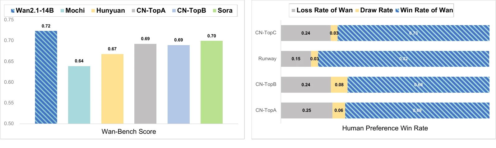
Sora 之后视频生成发展很快，开源的 HunyuanVideo、Mochi、CogVideoX 缩小了和商业模型的差距，但作者认为还差三点：性能不够；大多只做文生视频（T2V），而创作需求很杂；模型太大，资源有限的团队用不起。
Wan 的做法：DiT 加流匹配，交叉注意力注入文本，全时空注意力建模运动，规模做到 14B；训练数据是数十亿图像和视频，总量在万亿 token 的量级。在此基础上扩展到图生视频、指令编辑、零样本个性化、实时生成和音频生成。同时发布 1.3B 模型，T2V 和 I2V 都支持 480p。报告承诺公开数据管线、VAE、训练策略、加速和自动评测的细节。
闭源模型。按时间列了 Sora（2024 年 2 月）、可灵和 Luma 1.0（6 月）、Runway Gen-3、Vidu（7 月，U-ViT 结构）、可灵和 Luma 1.5、海螺、Pika 1.5、Movie Gen、可灵 1.6 和 Veo 2（12 月）。
开源社区。扩散视频模型通常沿用 Stable Diffusion 的三件套：自编码器、文本编码器、去噪网络。网络从 U-Net（VDM 的 3D U-Net，或 2D 空间加 1D 时间注意力）走到 DiT；DiT 又分两种，原版 DiT 用交叉注意力读文本，MM-DiT 把文本 token 和视觉 token 拼在一起做全注意力。自编码器从标准 VAE 到 VQ-VAE、VQGAN；LTX-Video 让解码器顺带完成最后一步去噪。文本编码器以 T5 为主，常配 CLIP；HunyuanVideo 换成多模态大模型。下游任务有重绘、编辑、可控生成、参考帧生成，多用 adapter 或 ControlNet 式结构注入条件。
三条原则：质量高、多样、规模大。最终是数十亿视频和图像。
候选数据来自内部有版权的来源和公开数据，先去重，再按四步清洗：
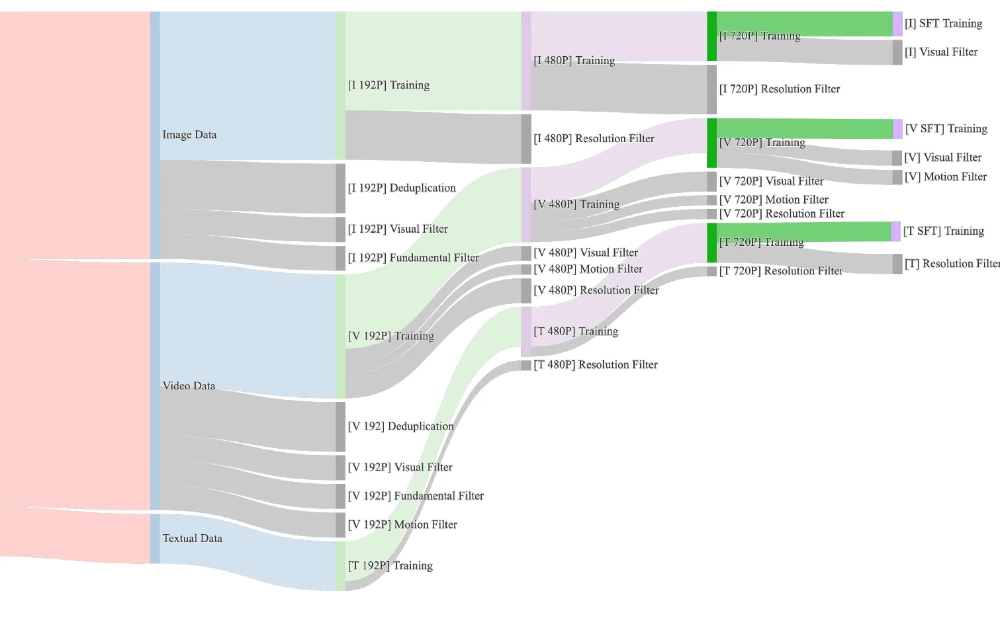
后训练要提高画面质量和运动质量，所以图像和视频分开处理。图像：专家模型打分最高的 20% 再按风格和类别保持多样，加上人工从各类别收集的高质量图，补齐缺失概念，共数百万张。视频：先用视觉质量分类器挑出靠前的，再按运动质量分类器挑出数百万条简单运动和数百万条复杂运动的视频，覆盖科技、动物、艺术、人物、交通工具等 12 个大类。
网页自带的描述太简单。DALL-E 3 证明用详细的生成描述训练能提升遵循提示的能力，所以作者训练了一个内部描述模型，给每张图和每段视频写稠密描述。
3.3.1 开源数据。图像和视频的描述数据、视觉问答数据（动作、计数、OCR），以及纯文本指令数据（让模型能按要求的风格写描述）。
3.3.2 内部数据。名人、地标、影视角色（先用大模型列名字，再用 CLIP 类模型 TEAM 检索，并要求描述里有关键词）；计数（从带数字的描述里抽出“类别、数量”，再用 Grounding DINO 数，对得上才留）；OCR 增强描述；镜头角度和运动（作者说 GPT-4o、Gemini Pro 都判断不好，于是人工标一批，既直接训练描述模型，也训练专家模型去标更多数据）；细粒度类别（数百万张动植物、车辆）；空间关系；扩写短描述；编辑指令描述（两张图的差别）；组图描述；人工标注的高质量稠密描述（只在最后阶段用）。
3.3.3 模型。LLaVA 式结构：ViT 提取视觉特征，两层 MLP 投影，接 Qwen 大模型。图像用动态高分辨率，最多切 7 块，每块池化成 12 × 12。视频每秒取 3 帧，最多 129 帧；“快慢”编码：每 4 帧保留 1 帧的原分辨率特征，其余帧全局平均池化。这个机制在 VideoMME（不带字幕）上把成绩从 67.6% 提到 69.1%。训练三阶段：先冻结 ViT 和 LLM 只训 MLP（学习率 1e-3）；再全部放开；最后在少量高质量数据上端到端训练。后两阶段 LLM 和 MLP 学习率 1e-5，ViT 1e-6。
3.3.4 评测。参照 CAPability 搭了自动评测：10 个维度，每个维度 1,000 段视频，和 Gemini 1.5 Pro 写的描述比 F1（图 4）。
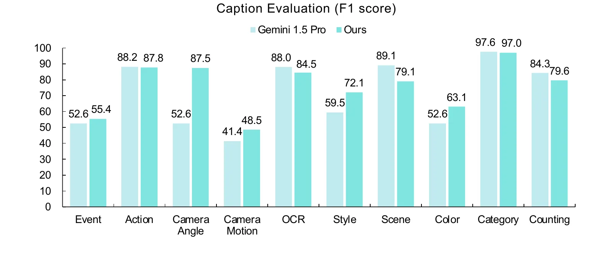
图上标的数（Gemini / Wan）：事件 52.6 / 55.4，动作 88.2 / 87.8，镜头角度 52.6 / 87.5，镜头运动 41.4 / 48.5，OCR 88.0 / 84.5，风格 59.5 / 72.1，场景 89.1 / 79.1，颜色 52.6 / 63.1，类别 97.6 / 97.0，计数 84.3 / 79.6。十项平均 Gemini 70.59，Wan 75.46，Wan 高 4.9 点，比图注说的“大致相当”更好一些，差距主要来自镜头角度（+34.9）。另外 Gemini 在事件、镜头角度、颜色三项上都是 52.6，三个不同维度恰好同一个数，可能是巧合，也可能是作图时的笔误，无法核实。
视频 VAE 有三个难处：要同时建模时间和空间；视频太大，长视频的显存吃不消；要保证因果（后面的帧不影响前面的帧）。Wan-VAE 是一个 3D 因果 VAE，组合了几种已有做法。
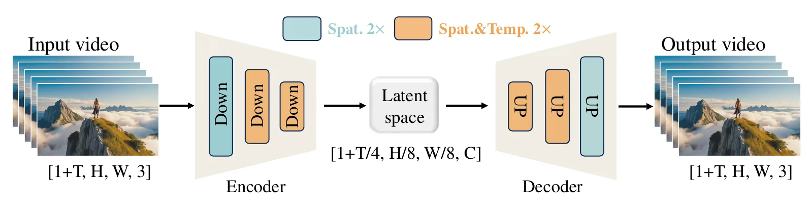
4.1.1 结构。输入 \(V\in\mathbb R^{(1+T)\times H\times W\times3}\)，压缩到 \([1+T/4,\ H/8,\ W/8]\)，通道数 \(C=16\)。首帧只做空间压缩（沿用 MagViT-v2），这样单张图像也能编码。把所有 GroupNorm 换成 RMSNorm，因为 GroupNorm 会跨时间统计，破坏因果，换掉后才能用特征缓存。空间上采样层的输入通道减半，推理显存少 33%。调整基础通道数后，模型只有 127M 参数。
4.1.2 训练。三阶段：先训一个同结构的 2D 图像 VAE；再“膨胀”成 3D 因果 VAE，在 128 × 128、5 帧的短视频上训练，损失是 L1 重建、KL、LPIPS，权重 3、3e-6、3；最后在不同分辨率和帧数的高质量视频上微调，加上 3D 判别器的 GAN 损失。
4.1.3 高效推理。帧数是 1 + T，所以把视频分成 1 + T/4 块，和隐帧一一对应：第一块 1 帧，之后每块 4 帧，每次编解码只处理一块，显存不随视频长度增长。块之间靠特征缓存衔接（图 6）：
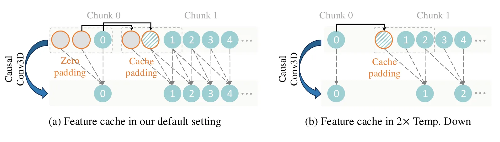
和论文一致。wan/modules/vae.py：CACHE_T = 2；CausalConv3d 把时间方向的填充全部放在前面（2 * padding[0], 0），有缓存时先拼缓存、再少补相应的零；encode 里 iter_ = 1 + (t - 1) // 4，第 0 块取 x[:, :, :1]，第 i 块取 x[:, :, 1+4(i-1) : 1+4i]；decode 每次只解码 1 个隐帧。downsample3d 的时间卷积核 3、步长 2，首块只存下特征、不做时间卷积，之后每块拼上一块的最后 1 帧，就是图 6(b)。RMSNorm 实现为 F.normalize(x, dim=1) * sqrt(C) * γ，只在通道维归一，每个时空位置独立，所以不跨帧。上采样层 nn.Conv2d(dim, dim // 2, 3) 输出减半，对应“空间上采样层通道减半”。结构参数：dim=96，dim_mult=[1, 2, 4, 4]，z_dim=16，时间下采样 [False, True, True]。
HF 上 Wan2.1 Diffusers 版 VAE 的 safetensors 文件头列出 195 个张量，参数合计 126,892,531，四舍五入 127M。原版 Wan2.1_VAE.pth 文件 507,609,880 字节，按 float32 每个 4 字节是 126.9M，也一致。
4.1.4 评测。和 HunyuanVideo、CogVideoX 等比 PSNR 和速度（每秒处理的帧数）。多数对手和 Wan 一样是 4 × 8 × 8、16 通道；Open Sora Plan 压缩率相同但 4 通道；SVD 是 1 × 8 × 8、4 通道；Step Video 8 × 16 × 16、64 通道；Mochi 6 × 8 × 8、12 通道。测试集 200 段视频，25 帧，720 × 720。作者说同样硬件下 Wan-VAE 的重建速度是 HunyuanVideo 的 2.5 倍，分辨率越高优势越大。图 8 是纹理、人脸、文字、大运动四类场景的定性比较。
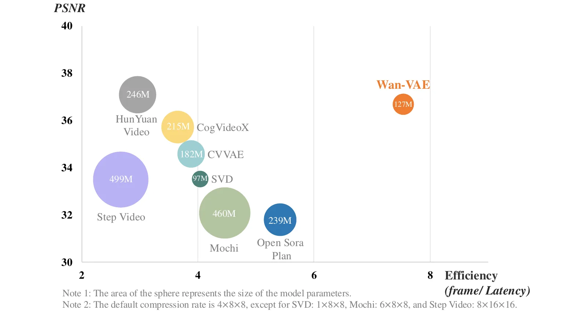
我从矢量图里取出各气泡的中心（pdftocairo -svg 导出第 12 页，气泡坐标按 Open Sora Plan 和 Step Video 两个不重叠的气泡与刻度标定，CogVideoX、CVVAE 两点验证误差小于 0.01），读数如下（效率 帧/秒，PSNR dB）：Wan-VAE (7.55, 36.7)，HunyuanVideo (2.96, 37.1)，CogVideoX (3.65, 35.8)，CVVAE (3.88, 34.6)，SVD (4.04, 33.6)，Step Video (2.67, 33.5)，Mochi (4.46, 32.1)，Open Sora Plan (5.42, 31.9)。速度比 7.55 / 2.96 = 2.55，和正文的“2.5 倍”一致；但 HunyuanVideo 的 PSNR 比 Wan-VAE 高约 0.4 dB。Wan2.2 README 的 VAE 表（见下）也是 Hunyuan 33.298 高于 Wan2.1-VAE 32.222。所以 Wan-VAE 的优势是“小而快、质量接近”，不是“重建最好”。这些是重画读数，不是原文给的数。
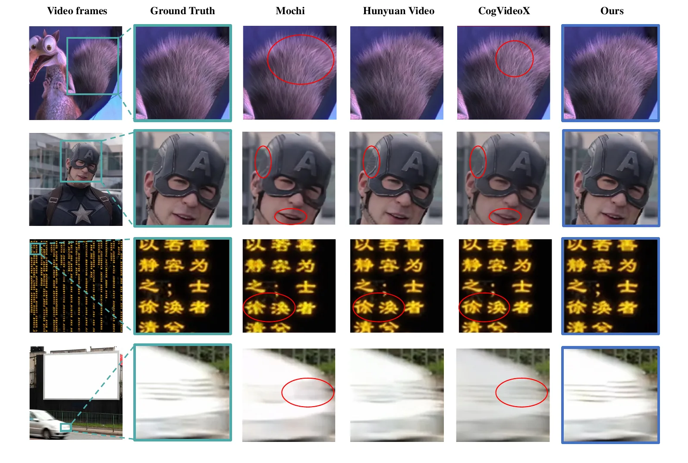
整体是 DiT 的三件套：Wan-VAE、扩散 Transformer、文本编码器（图 9）。视频 \(V\in\mathbb R^{(1+T)\times H\times W\times3}\) 编码成 \(x\in\mathbb R^{(1+T/4)\times H/8\times W/8}\)（16 通道），再送进 DiT。
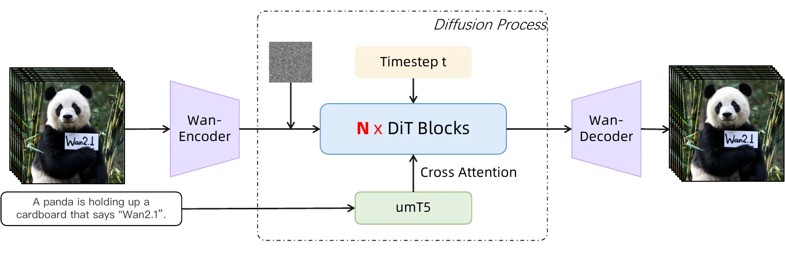
三部分：patch 化、Transformer 块、反 patch 化。patch 化用核大小 (1, 2, 2) 的 3D 卷积，把 \(x\) 摊平成 \((B, L, D)\)，序列长度 \(L=(1+T/4)\times H/16\times W/16\)。每个块（图 10）里：
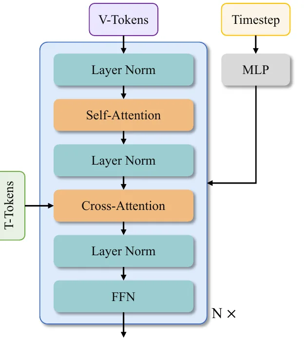
文本编码器。用 umT5。理由：多语言好，中英文和画面里的文字都能理解；同条件下组合能力比单向注意力的大模型强；收敛更快。
wan/modules/model.py 的 WanAttentionBlock：e = modulation + e0，其中 e0 由所有块共享的 time_embedding（Linear–SiLU–Linear）和 time_projection（SiLU–Linear，输出 6 × dim）算出，modulation 是每块自己的 (1, 6, dim) 参数，就是论文说的“每块一组偏置”。然后：
\(x \leftarrow x + g_1\odot\mathrm{SelfAttn}(\mathrm{LN}(x)(1+s_1)+b_1)\)，\(x\leftarrow x+\mathrm{CrossAttn}(\mathrm{LN}_{\rm aff}(x),\ c_{\rm text})\)，\(x\leftarrow x+g_2\odot\mathrm{FFN}(\mathrm{LN}(x)(1+s_2)+b_2)\)。
几个论文没写的细节：交叉注意力不受时间步调制，它前面的 LayerNorm 带可学习的仿射参数（norm3，elementwise_affine=True），另外两个 LayerNorm 不带；Q、K 都过 RMSNorm；位置编码是 3D RoPE，每个头 128 维按复数对拆成时间 22、高 21、宽 21 对（即 44 / 42 / 42 个实数维）；FFN 用 tanh 近似的 GELU；文本先过一个 4096 → dim → dim 的两层 MLP，长度补零到 512。
按代码的层定义（每块：自注意力 4 个线性层加 2 个 RMSNorm，交叉注意力同样，FFN 两层，带仿射的 norm3，6 × dim 的 modulation；外加 patch 卷积、文本 MLP、时间 MLP、共享的 time_projection、输出头）算：
前三个和 HF API 报告的 safetensors 参数总数完全相同；5B 的 index.json 写 total_size 19,999,150,848 字节，除以 4（float32）正好是 4,999,787,712。所以“1.3B”实际是 1.42B，“I2V-14B”实际是 16.4B。这也和 OpenWAM 页说的“每层约 1.64 亿、30 层约 49 亿”一致（30 × 163,656,704 = 4,909,701,120，再加嵌入和输出头约 0.09B）。
用流匹配在图像和视频上统一建模。先在低分辨率图像上预训练，再分阶段做图像-视频联合训练，分辨率和时长逐步增加。
训练目标。给定图像或视频隐变量 \(x_1\)、噪声 \(x_0\sim\mathcal N(0,I)\)、从 logit-normal 分布采样的 \(t\in[0,1]\)，按 Rectified Flow 做线性插值：
真值速度：
模型预测速度，损失是均方误差：
\(c_{\rm txt}\) 是 512 个 token 的 umT5 文本嵌入。
式 (1) 里 \(t=1\) 是数据、\(t=0\) 是噪声。代码里正好反过来：采样器的 sigma 是噪声比例，timesteps = sigma × 1000，从约 999 走到 0，\(t=1000\) 是纯噪声；Wan2.2 README 讲 MoE 时也说“t 大、噪声大”。两者只差 \(t\to1-t\)，读代码和 README 时要换算。训练用的 logit-normal 参数没有公开，训练代码也不在仓库里，未核实。
图像预训练。直接用高分辨率图像和长视频联合训练有两个问题：序列太长（1280 × 720 的视频通常 81 帧），同样 GPU 小时下数据吞吐不够；显存逼得 batch 很小，梯度方差尖峰导致不稳定。所以 14B 先做 256 px 文生图预训练，先学好文本对齐和几何结构。
图像-视频联合训练。三个阶段按分辨率递进：(1) 256 px 图像加 5 秒、192 px、16 fps 的视频；(2) 图像和视频都升到 480 px，视频仍 5 秒；(3) 都升到 720 px。
配置。bf16 混合精度，AdamW，权重衰减 1e-3，初始学习率 1e-4，FID 和 CLIP Score 停滞时下调。
结构和优化器不变，从预训练检查点开始，在 3.2 节的后训练数据上做 480 px 和 720 px 联合训练。
自己画的 · 11 幕 3D 框架动画
从数据到推理拆成 11 幕：总览、数据管线、Wan-VAE 的因果分块、特征缓存（可单步）、patch 化和 token 数（可切换 1.3B / 14B / 5B）、DiT 块和共享调制（当场算参数量）、流匹配训练、推理采样和 CFG、Wan2.2 的 MoE 切换、TI2V-5B 的首帧条件、结果。下面嵌的是第 6 幕。
4.3.1 负载分析。训练时 DiT 占总计算的 85% 以上。DiT 的计算量约为 \(L(\alpha bsh^2+\beta bs^2h)\)（层数 \(L\)、micro batch \(b\)、序列长 \(s\)、隐藏维 \(h\)），线性层随 \(s\) 线性增长，注意力随 \(s^2\) 增长；Wan 用非因果注意力，\(\beta\) 前向 4、反向 8。Wan 的序列常有几十万 token，序列到 100 万时注意力能占端到端训练时间的 95%。显存方面，只训 DiT（文本编码器和 VAE 冻结），激活约 \(\gamma Lbsh\)；普通 LLM 的 \(\gamma\) 约 34，DiT 因为输入里还有提示词和时间步，\(\gamma\) 可超过 60。100 万 token、micro batch 1 时，14B 的激活能超过 8 TB。结论：计算随 \(s^2\)、显存随 \(s\) 增长。
按 \(\gamma Lbsh\)（字节，沿用 Korthikanti 等的约定）：\(\gamma=60\)、\(L=40\)、\(s=10^6\)、\(h=5120\) 得 \(60\times40\times10^6\times5120=1.23\times10^{13}\)，约 12.3 TB；\(\gamma=34\) 是 7.0 TB。\(\gamma\ge39\) 就超过 8 TB，和“可超过 8 TB”相符。实际一个样本有多少 token：720p、81 帧编码成 21 × 90 × 160，patch 后 21 × 45 × 80 = 75,600 个 token；480p（480 × 832）是 21 × 30 × 52 = 32,760。所以“100 万 token”是 batch 拼接或更长视频的假设场景，单个 5 秒 720p 样本远到不了。
4.3.2 并行策略。VAE 用了缓存后显存很小，直接数据并行（DP）；文本编码器超过 20 GB，用 DP 加 FSDP 分片。DiT 的参数分片选 FSDP。激活形状 \([b,s,h]\)：\(s\) 维用上下文并行（CP，Ulysses 或 Ring Attention），\(h\) 维用 Megatron 的张量并行加序列并行；CP 通信更少，所以选 CP，并设计二维 CP：外层 Ring Attention，内层 Ulysses（类似 USP）。256K 序列、2 台机器 16 卡时，通信开销从纯 Ulysses 的 10% 以上降到 1% 以下。FSDP 组和 CP 组相交，DP 大小 = FSDP 大小 / CP 大小。
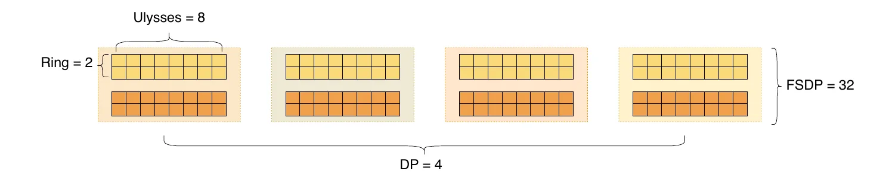
CP = 8 × 2 = 16；FSDP 组 32 卡里有 32 / 16 = 2 个 CP 组，即组内 DP = 2，对应“FSDP 组的 batch 为 2b”；外层 DP = 4，4 × 32 = 128 卡；数据副本数 128 / 16 = 8，所以全局 batch = 8b。各处都对得上。
模块间切换。VAE 和文本编码器用 DP，DiT 用 DP + CP。CP 组内的卡必须读同一批数据，但如果 VAE 和文本编码器也读同一批就是重复计算。做法：CP 组内各卡先读不同数据、各自编码，然后按 CP 大小循环广播，让 CP 组内的输入一致。这样 VAE 和文本编码器在一次迭代里的耗时降到 1/CP。
4.3.3 显存优化。计算随 \(s^2\) 增长、显存随 \(s\) 增长，所以长序列下计算时间最终会超过把激活卸载到 CPU 的 PCIe 传输时间：卸载一层的激活可以和 1 到 3 层的计算重叠。所以优先用激活卸载；CPU 内存也会不够，再配合梯度检查点，优先给“显存 / 计算”比高的层做检查点。
4.3.4 集群可靠性。依靠阿里云的调度、慢机检测和自愈：启动时排除有问题的节点，训练中隔离故障节点并自动重启续训。
推理通常要约 50 步采样。手段：量化和分布式减少每步时间；利用相邻步注意力的相似性和 CFG 的相似性减少总计算量。
4.4.1 并行。多卡时用和训练相同的二维 CP（外 Ring 内 Ulysses）降低单个视频的延迟；14B 用 FSDP 分片模型（长序列下 FSDP 的通信比张量并行少，且能和计算重叠）。图 12 是 14B 的多卡加速比，接近线性。
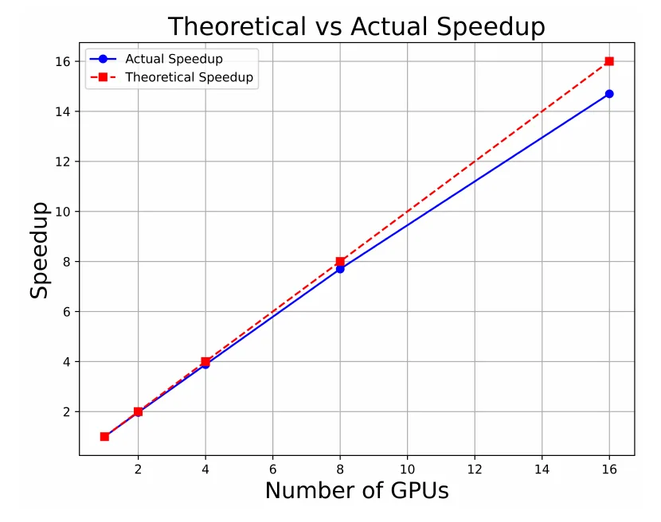
4.4.2 扩散缓存。两个观察：同一个 DiT 块里，不同采样步的注意力输出很相似；采样后期条件和无条件输出很相似。据此：注意力每隔几步算一次、其余步复用；无条件分支每隔几步算一次，其余步复用条件结果，并像 FasterCache 那样做残差补偿。具体在哪些步缓存，用验证集挑选，以保证无损。14B T2V 推理快了 1.62 倍。
4.4.3 量化。DiT 块里所有 GEMM 用 FP8（权重按张量、激活按 token 量化），GEMM 本身快一倍，DiT 模块整体快 1.13 倍。注意力方面，FlashAttention3 原生 FP8 在视频生成上质量明显下降，所以改造 FA3：\(S=QK^\top\) 用 Int8，\(O=PV\) 用 FP8；FP8 WGMMA 只有 14 位累加器，长序列会溢出，所以块内用 FP8 WGMMA，跨块用 CUDA core 的 FP32 寄存器累加（借鉴 DeepSeek-V3）；把 FP32 累加和 rescale 融合，调整块大小减少寄存器溢出。在 H20 上达到 95% MFU，推理整体快 1.27 倍以上。
让用户输入更像训练描述。两招：训练时每段视频配多种长短（长、中、短）和风格（正式、口语、诗意）的描述；推理时用大模型改写用户提示，原则是：不改原意地加细节；按主体类别加自然的动作；按后训练描述的结构写，先风格、再内容摘要、再细节。速度和效果折中，用 Qwen2.5-Plus 改写。
| 用户提示（大意） | 改写后（大意） |
|---|---|
| 维京战士双手挥巨斧，黄昏雪地里与猛犸搏斗，雪花飞舞 | 加上体格、皮甲和角盔、坚毅表情；猛犸的长毛、獠牙、怒吼；黄昏、冰原和远山轮廓；冷色调光照；高机位动态近景 |
| 镜头跟随一艘快艇追逐海豚 | 纪录片风格；驾驶员穿救生衣戴头盔；海豚跃出水面再潜入；晴天蓝海、远处白云；中景跟拍 |
| 戴王冠的小土豆国王坐在王座上，土豆臣民朝拜 | 超现实风格；金冠、高王座、土黄色凹凸表皮；臣民两侧低头；金红色宫殿；顶光营造神圣感；高机位近景 |
FVD、FID 和人的感知不一致，所以作者做了自动、全面、和人工对齐的 Wan-Bench：三大维度（动态质量、画面质量、指令遵循），14 个细项（图 13），每项单独设计打分算法，简单的用传统检测器，复杂的用多模态大模型。
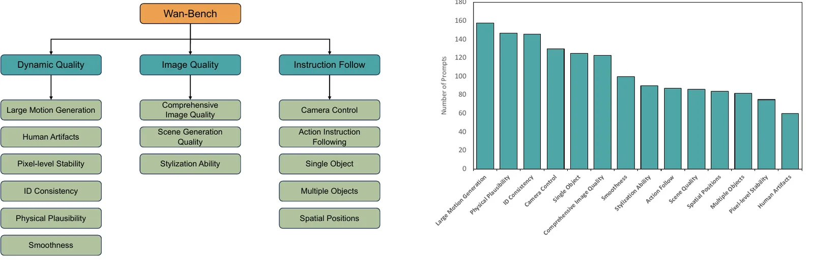
人工反馈加权。收集了 5,000 多对不同模型（含 Wan）视频的两两比较，用户按文本选偏好并给大致分数。每个维度的权重来自“模型分数和人工分数的 Pearson 相关”，加权得到总分。
对手包括可灵、海螺、Sora、Runway、Vidu 等商业模型和 Mochi、CogVideoX、HunyuanVideo 等开源模型。每个模型用 Wan-Bench 的提示生成 1,035 个样本，按 4.6 节的人工加权打分。
表 2 · Wan-Bench 各维度和加权总分（照录原文）
| 维度 | CNTopB | Hunyuan | Mochi | CNTopA | Sora | Wan 1.3B | Wan 14B |
|---|---|---|---|---|---|---|---|
| 大运动生成 | 0.405 | 0.413 | 0.420 | 0.284 | 0.482 | 0.468 | 0.415 |
| 人体伪影 | 0.712 | 0.734 | 0.622 | 0.833 | 0.786 | 0.707 | 0.691 |
| 像素级稳定 | 0.977 | 0.983 | 0.981 | 0.974 | 0.952 | 0.976 | 0.972 |
| ID 一致 | 0.940 | 0.935 | 0.930 | 0.936 | 0.925 | 0.938 | 0.946 |
| 物理合理性 | 0.836 | 0.898 | 0.728 | 0.759 | 0.933 | 0.912 | 0.939 |
| 流畅度 | 0.765 | 0.890 | 0.530 | 0.880 | 0.930 | 0.790 | 0.910 |
| 综合画质 | 0.621 | 0.605 | 0.530 | 0.668 | 0.665 | 0.596 | 0.640 |
| 场景生成质量 | 0.369 | 0.373 | 0.368 | 0.386 | 0.388 | 0.385 | 0.386 |
| 风格化 | 0.623 | 0.386 | 0.403 | 0.346 | 0.606 | 0.430 | 0.328 |
| 单物体准确 | 0.987 | 0.912 | 0.949 | 0.942 | 0.932 | 0.930 | 0.952 |
| 多物体准确 | 0.840 | 0.850 | 0.693 | 0.880 | 0.882 | 0.859 | 0.860 |
| 空间位置准确 | 0.518 | 0.464 | 0.512 | 0.434 | 0.458 | 0.476 | 0.590 |
| 相机控制 | 0.465 | 0.406 | 0.605 | 0.529 | 0.380 | 0.483 | 0.527 |
| 动作指令遵循 | 0.917 | 0.735 | 0.907 | 0.783 | 0.721 | 0.844 | 0.860 |
| 加权总分 | 0.690 | 0.673 | 0.639 | 0.693 | 0.700 | 0.689 | 0.724 |
加粗（best）是我标的每行最大值。
14 项里 Wan 14B 只在 ID 一致、物理合理性、空间位置 3 项最高；Sora 4 项，CNTopB 3 项。不加权的 14 项平均：Sora 0.7171，Wan 14B 0.7154，CNTopB 0.7125，Wan 1.3B 0.6996，CNTopA 0.6881，Hunyuan 0.6846，Mochi 0.6556。也就是说，等权时 Sora 略高于 Wan 14B；加权后 Wan 14B 0.724 第一、Sora 0.700 第二，排名变化来自人工偏好得到的权重。各维度的权重没有公布，7 个模型 14 个未知数也解不出来，未核实。
定性。图 15（第 23 页，样例截图，未放图，看原图 ↗）八组提示：80 年代怪物派对、狗骑自行车的老照片、荷塘出水的女子、摩托车越野、跳水、草地上漂浮的人、头顶写“囍”字气球的父子骑车，以及手写体“WAN”的 70 年代片头。作者强调大运动、物理交互、艺术风格和中英文字。
人工评测。700 多个任务，20 多人标注，四个维度。
表 3 · T2V 两两比较，Wan 14B 对各模型（照录原文；原文称“胜率差”）
| CN-TopA | CN-TopB | CN-TopC | Runway | 总轮数 | |
|---|---|---|---|---|---|
| 画面质量 | 30.6% | 15.9% | 27.8% | 48.1% | 5710 |
| 运动质量 | 16.1% | 9.7% | 14.9% | 40.3% | 5785 |
| 匹配度 | 46.0% | 57.9% | 56.7% | 69.1% | 5578 |
| 综合排名 | 44.0% | 44.0% | 48.9% | 67.6% | 5560 |
表注说数字是“Wan 14B 胜出的次数占总比较次数的比例”。但图 1 右边给了综合比较的负、平、胜比例，相减正好得到表 3 最后一行：CN-TopA 0.69 − 0.25 = 0.44，CN-TopB 0.68 − 0.24 = 0.44，CN-TopC 0.73 − 0.24 = 0.49（表 48.9%），Runway 0.82 − 0.15 = 0.67（表 67.6%）。图 1 的三段之和都是 1.00。表 7（I2V）里还出现了 −4.2%，比例不可能为负。所以两张表的数都是“胜率 − 负率”，标题里的“win rate gap”是对的，表注的说法不准。
公开榜单。VBench 把视频质量拆成 16 个维度（美学、运动流畅、语义一致等）。
表 4 · VBench 分数（照录原文）
| 模型 | 质量分 | 语义分 | 总分 |
|---|---|---|---|
| MiniMax-Video-01 | 84.85% | 77.65% | 83.41% |
| Hunyuan（开源版） | 85.09% | 75.82% | 83.24% |
| Gen-3（2024-07） | 84.11% | 75.17% | 82.32% |
| CogVideoX1.5-5B（5 s SAT，提示优化） | 82.78% | 79.76% | 82.17% |
| 可灵（2024-07 高性能模式） | 83.39% | 75.68% | 81.85% |
| Sora | 85.51% | 79.35% | 84.28% |
| Wan 1.3B | 84.92% | 80.10% | 83.96% |
| Wan 14B（2025-02-24） | 86.67% | 84.44% | 86.22% |
VBench 的总分按这个权重合成，表 4 每一行都能复算：Wan 14B 0.8 × 86.67 + 0.2 × 84.44 = 86.224；Wan 1.3B 83.956；Sora 84.278；MiniMax 83.410；Hunyuan 83.236；Gen-3 82.322；可灵 81.848。唯一差 0.01 的是 CogVideoX：算出 82.176，表里 82.17，像是截断而不是四舍五入。正文说 Wan 14B 的视觉质量 86.67%、语义一致 84.44%，和表一致。
都在 1.3B 上做。
AdaLN 共享与否。adaLN 参数很多，问题是：把参数花在 adaLN 上好，还是花在加深网络上好。参照 PixArt 的 adaLN-single。四种配置：(i) 全共享，30 层，1.3B（原模型）；(ii) 前 15 层共享、后 15 层不共享，1.5B；(iii) 全共享但加深到 35 层，1.5B；(iv) 全不共享，30 层，1.7B。都从头训文生图 20 万步（即 T2V 训练的第一阶段），全局 batch 1536，比较隐空间里的训练 L2 损失。结果（图 16）：全共享 1.3B 损失略高；同为 1.5B 时加深的 (iii) 始终最低；1.7B 的全不共享也不如 (iii)。结论：参数花在深度上比花在 adaLN 上值，所以采用全共享。
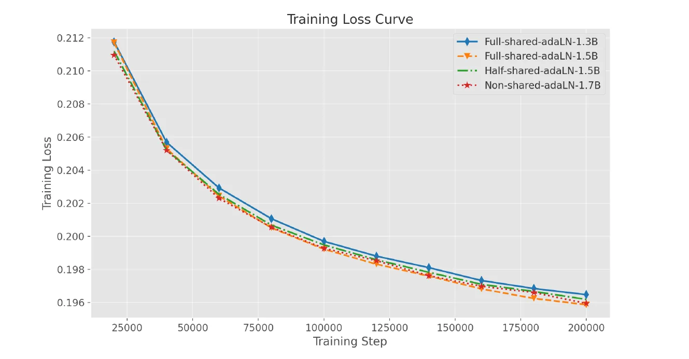
不共享时，每块要多一个自己的 Linear(dim → 6 dim)，即 \(6d^2+6d\) 个参数。1.3B（\(d=1536\)）：每块 14,164,992，30 块 424,949,760；全不共享共 1,843,946,560，共享省掉 424.9M / 1,843.9M = 23.0%。14B（\(d=5120\)）：40 块共 6,292,684,800，全不共享 20,581,176,384，省掉 30.6%。“约 25%”是 1.3B 附近的说法，放在 14B 上低估了。
消融的四个配置按同样的算法是：(i) 1.419B，(ii) 前 15 层共享 1.419 + 15 × 0.01416 = 1.631B，(iii) 35 层 1.651B，(iv) 1.844B。论文写的 1.3B / 1.5B / 1.5B / 1.7B 都是取整，(ii) 和 (iii) 也不严格等参（差 20M，约 1.2%）。另外图 16 里四条线最大差距只有约 0.001（约 0.5%），论文只给了训练损失，没有生成质量指标，“明显更好”的说法证据偏弱。
文本编码器。三个能处理中英文的候选：umT5（5.3B）、Qwen2.5-7B-Instruct、GLM-4-9B，后两者用倒数第二层特征，并按 HunyuanVideo 的做法加一个双向 token refiner。在文生图任务上比训练损失（图 17），umT5 最好。理由之一是 umT5 是双向注意力，更适合扩散模型。再和多模态的 Qwen-VL-7B-Instruct 比 FID（表 6）：用倒数第二层时和 umT5 相当，但模型更大。
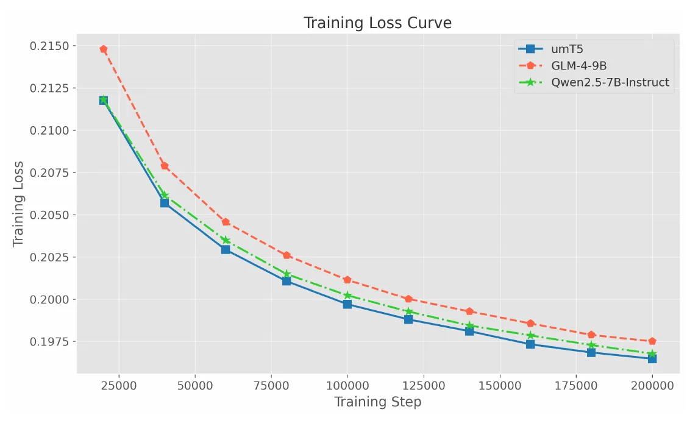
| 表 5 · FID ↓ | VAE | VAE-D |
|---|---|---|
| 10k steps | 42.60 | 44.21 |
| 15k steps | 40.55 | 41.16 |
| 表 6 · FID ↓ | umT5 | Qwen-VL-7B（最后一层） | Qwen-VL-7B（倒数第二层） |
|---|---|---|---|
| FID | 43.01 | 43.72 | 42.91 |
自编码器。VAE-D 是把重建损失换成扩散损失的变体。两者都在文生图任务上训到 15 万步收敛，比 FID（表 5），VAE 始终更低。
正文说训练 150,000 步，在 100,000 和 150,000 步测 FID；表 5 的行名是“10k steps”和“15k steps”。两者差 10 倍，哪个对无法核实。另外表 6 里 Qwen-VL 倒数第二层 42.91 比 umT5 的 43.01 还低 0.10，作者的选择理由是 umT5 更小（我核到的 umT5-XXL 编码器文件 models_t5_umt5-xxl-enc-bf16.pth 为 11,361,920,418 字节，按 bf16 约 5.68B 参数，比正文的 5.3B 多一些，未核实原因）。
常见做法（I2VGen-XL、SVD、CogVideoX）是把条件图的隐变量和噪声隐变量按通道拼接，Wan-I2V 也这样。
5.1.1 结构。条件图 \(I\in\mathbb R^{C\times1\times H\times W}\) 在时间轴上接零帧，得到 \(I_c\in\mathbb R^{C\times T\times H\times W}\)，经 Wan-VAE 得到条件隐变量 \(z_c\in\mathbb R^{c\times t\times h\times w}\)（\(c=16\)，\(t=1+(T-1)/4\)，\(h=H/8\)，\(w=W/8\)）。二值掩码 \(M\in\{0,1\}^{1\times T\times h\times w\}\) 中 1 表示保留、0 表示要生成；它和目标视频同样长 \(T\)，再重排成 \(s\times t\times h\times w\)（\(s\) 是 VAE 的时间步长）。噪声隐变量 \(z_t\)、\(z_c\)、重排后的掩码 \(m\) 按通道拼接送入 DiT，输入通道从 \(c\) 变成 \(2c+s\)，多出的部分用一个零初始化的投影层接入。另外用 CLIP 图像编码器提取条件图特征，经三层 MLP 投影成全局上下文，用解耦交叉注意力注入。这个掩码机制也能做首尾帧过渡和视频续写，所以训练时把图生视频、续写、首尾帧过渡、随机插帧放在一起：先统一预训练，再分任务微调。
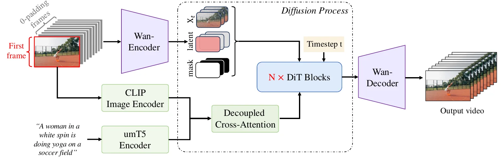
\(2c+s=2\times16+4=36\)，HF 上 Wan2.1-I2V-14B-480P 的 config.json 写 in_dim: 36，对上。代码（image2video.py 第 210-217 行）先建 81 帧的掩码，首帧为 1、其余为 0，再把首帧重复 4 次得到 84 = 21 × 4 帧，重排成 (4, 21, h, w)，所以掩码占 4 个通道、首个隐帧的 4 个通道全是 1。注意符号：这里的 \(T\) 是总帧数，\(t=1+(T-1)/4\)；§4.1 的 \(T\) 是“总帧数减 1”，隐帧数写成 \(1+T/4\)。同一篇里 \(T\) 的含义变了。另外 Wan2.2 的 I2V-A14B 去掉了 CLIP 分支：Wan2.2/wan/modules/model.py 里已经没有 WanI2VCrossAttention，只靠通道拼接（config 仍是 in_dim: 36）。
5.1.2 数据。联合训练阶段用和 T2V 预训练相同的数据。微调阶段每个任务单独挑数据：I2V 要求首帧和后续内容接近（首帧 SigLIP 特征和其余帧均值的余弦相似度高于阈值），否则模型学不稳；续写要求前 1.5 秒和后 3.5 秒的 SigLIP 相似度高；首尾帧过渡反过来提高首尾差异大的样本比例。
5.1.3 评测。两阶段训练。预训练阶段帧数稍多，去掉图像编码器分支，以保持对文本的敏感；这个阶段结束时模型已经会 I2V 和续写。但只靠帧级信息不够，条件帧很少时尤其缺少语义，所以在 SFT 阶段加上图像编码器（解耦交叉注意力）。在 480p 和 720p 两个预训练检查点上分别训练 I2V、续写、首尾帧三个任务。人工比较见表 7；图 19、20（第 28、29 页，样例截图，未放图，看原图 ↗）是各种图片动起来的例子。
表 7 · I2V 两两比较的胜率差（照录原文）
| CN-TopA | CN-TopB | CN-TopC | CN-TopD | 总轮数 | |
|---|---|---|---|---|---|
| 画面质量 | 29.2% | 60.8% | 24.6% | 55.6% | 896 |
| 运动质量 | 21.7% | 21.7% | 32.5% | 67.0% | 890 |
| 匹配度 | −4.2% | 35.0% | 51.7% | 72.2% | 896 |
| 综合排名 | 10.8% | 47.5% | 50.8% | 81.6% | 890 |
匹配度对 CN-TopA 是 −4.2%，即这一项 Wan-I2V 输得比赢得多（读者注 11）。
在作者此前的 VACE 基础上，把编辑用的图像、视频、参考和掩码统一成“视频条件单元”（VCU）。VACE 用概念解耦让模型分清哪些保留、哪些修改。两种训练方式：把 VCU 作为输入全量微调 Wan；或者用可插拔的 Context Adapter（Res-Tuning 式），不改基座权重但总模型更大。
5.2.1 结构。VCU 写成
\(T\) 是文本，\(F=\{u_1,\dots,u_n\}\) 是上下文帧（RGB，归一化到 \([-1,1]\)），\(M=\{m_1,\dots,m_n\}\) 是二值掩码（1 表示要编辑）。\(F\) 和 \(M\) 空间、时间都对齐。概念解耦把帧分成两路：\(F_c=F\times M\)（要改的“反应帧”）和 \(F_k=F\times(1-M)\)（要保留的“非活动帧”），分别经 Wan-VAE 编码到和 \(X\) 相同的隐空间；参考图单独编码后沿时间拼接，解码时再去掉；\(M\) 直接重排并插值。之后 \(F_c\)、\(F_k\)、\(M\) 和 \(X\) 在时空上对齐成 \(n'\times h'\times w'\)。
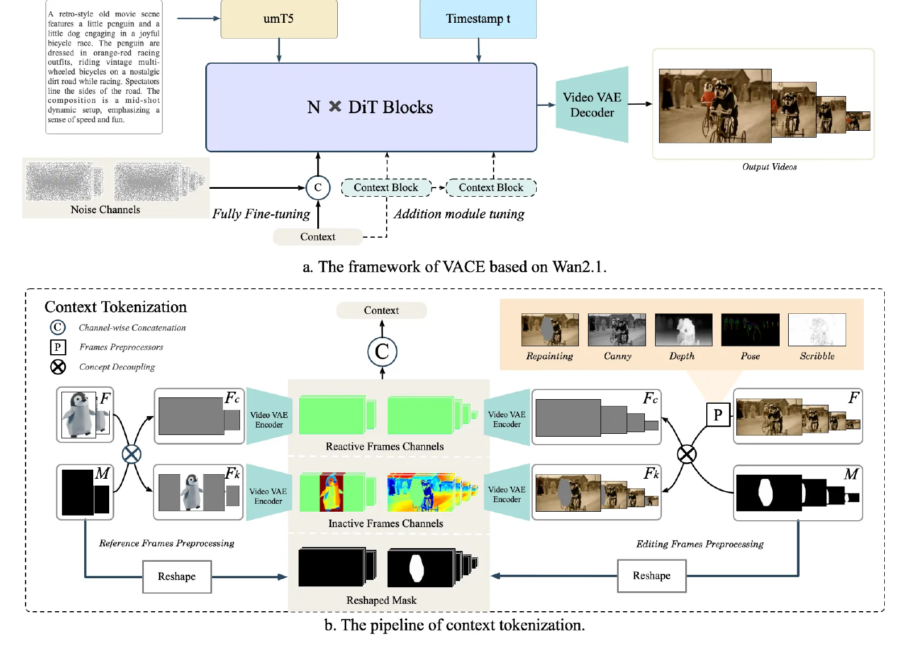
5.2.2 数据和实现。先切镜头，按分辨率、美学分、运动幅度初筛；首帧用 RAM 打标签、Grounding DINO 检测，过滤目标过大或过小的视频；用 SAM2 的传播做视频分割，按掩码面积阈值算有效帧比例再过滤。基于 Wan-T2V-14B 多阶段训练，最高 720p：先训修补和扩展这类基础任务，再从单参考扩到多参考、从单任务扩到组合任务，最后用更高质量、更长的数据微调。
5.2.3 评测。只有定性结果：图 22、23（外扩、修补、延长、深度、姿态、灰度、涂鸦、布局、物体、人脸等任务）和图 24（组合任务和图像编辑），都是样例截图，未放图（看原图 ↗）。
Wan 是图像和视频联合训练的，图像数据量接近视频的 10 倍，所以文生图也很强。图 25（第 36 页，未放图，看原图 ↗）是艺术字、写实人像、创意设计和产品摄影的样图。代码里 t2i-14B 的配置和 t2v-14B 完全相同，只是帧数取 1。
目标是生成和参考人物身份一致的视频。现有方法用 ArcFace 这类身份提取器（会漏掉疤痕、贴纸等线索，怕低分辨率、光照、遮挡）或 CLIP 这类通用提取器（只抓粗语义）。Wan 不用任何特征提取器，直接在 Wan-VAE 的隐空间里拿人脸图做条件。
5.4.1 结构。作者发现交叉注意力适合接提取器给的稠密表示，自注意力适合同一隐空间里的数据，所以用自注意力范式：在视频前面多接 \(K\) 帧，放分割好、关键点对齐到黑底画布上的人脸；沿通道维给这 \(K\) 帧拼上人脸和全 1 掩码，给后面的视频帧拼上空白图和全 0 掩码，作为条件；在这个加长的视频上做修补式扩散。Wan-T2V 本身不改。训练时随机丢掉一部分人脸，支持 0 到 \(K\) 张参考；推理时把用户的人脸（不超过 \(K\) 张）拼进前 \(K\) 帧，掩码设 1。
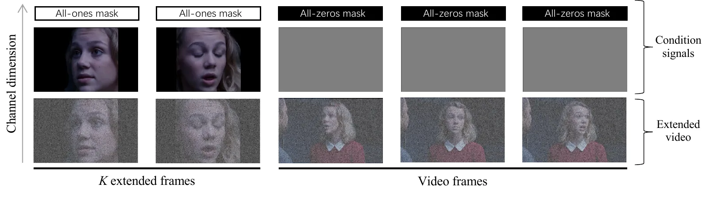
5.4.2 数据。用内部人体分类器从 T2V 训练集里筛出约 O(100)M 条视频，1 FPS 做人脸检测：任一帧多于一张脸、或超过 10% 的帧没检测到脸，就丢弃；相邻帧 ArcFace 相似度低的也丢弃；再做人脸分割和关键点检测。小脸不过滤（这类视频多有全身人物）。最后约 O(10)M 条，平均每条 5 张人脸。为了多样性，再随机取 O(1)M 条，用 Instant-ID 按 100 多个风格模板（动漫、线稿、电影、Minecraft 等）和随机姿态合成新脸，按 ArcFace 相似度过滤，得到约 O(1)M 条。
5.4.3 评测。测试人脸取自 Pexels。在未见过的评测集上，按 1 FPS 采样生成视频里的人脸，和输入人脸算 ArcFace 相似度再平均。图 27（第 39 页，未放图，看原图 ↗）是样例。
| 表 8 | Wan | CN-TopA | CN-TopB | CN-TopC |
|---|---|---|---|---|
| ArcFace 相似度 | 0.5526 | 0.5655 | 0.5197 | 0.4998 |
Wan 排第二，比 CN-TopA 低 0.013；作者的措辞是“有竞争力”。
每帧给外参 \([R,t]\in\mathbb R^{3\times4}\) 和内参 \(K_f\in\mathbb R^{3\times3}\)。相机姿态编码器：每个像素用 Plücker 坐标表示，得到 \(P\in\mathbb R^{6\times F\times H\times W}\)；PixelUnshuffle 降低空间分辨率、增加通道；再用一串和 DiT 块数对齐的卷积模块提取多层相机特征。相机姿态适配器：两个零初始化卷积把相机特征变成缩放 \(\gamma_i\) 和平移 \(\beta_i\)，按 \(f_i=(\gamma_i+1)f_{i-1}+\beta_i\) 加到第 \(i\) 个 DiT 块的视频特征上。训练数据用 VGGSfM 从镜头运动明显的视频里估计相机轨迹，约 O(1) 千段，在 T2V 框架里用 Adam 训练。图 29（第 41 页，未放图，看原图 ↗）是结果。
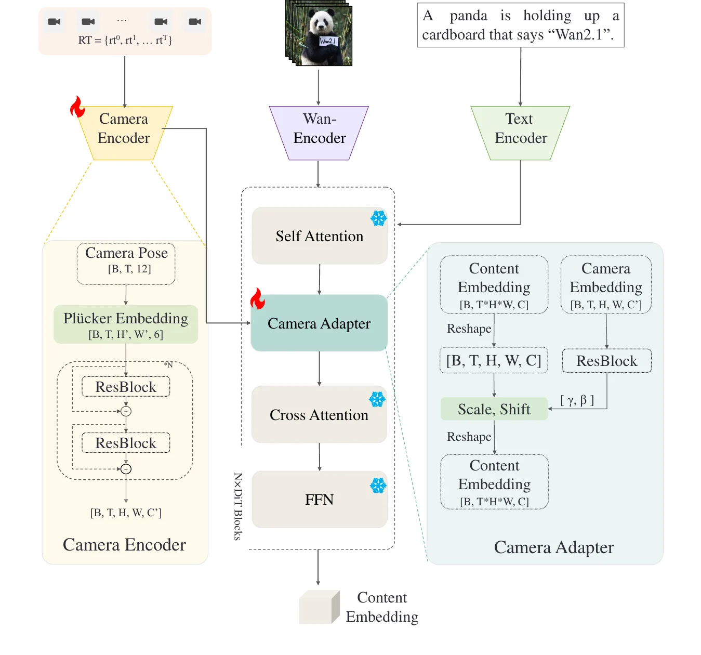
互动娱乐、VR、直播、游戏需要即时生成。5.6.1 方法：从预训练的 Wan 出发（收敛快、继承运动先验；这一节部分内容来自 The Matrix 技术报告）。预训练模型只生成 5 到 10 秒的固定长度，要变成无限长的实时流需要两个改动：流式生成和实时加速。
5.6.2 流式生成（Streamer）。假设时间依赖只在一个窗口内。视频 token 排成队列，窗口内各 token 处在不同噪声水平；固定步数后，最左边（噪声最低）的 token 出队并缓存，最右边补一个高斯噪声的新 token。训练时采样 \(2w\) 个 token（\(w\) 是窗口大小，通常等于求解器步数 \(T\)），前 \(w\) 个只用来“预热”、不计损失，损失只算后 \(w\) 个；推理时也丢掉前 \(w\) 个，从第 \(w+1\) 个开始输出。缓存的 token 以噪声水平 0 重新放回队列，参与后续窗口的去噪，保证连续。图 30：8 张 A100 实时 8 FPS 生成 15 分钟视频（未放图，看原图 ↗）。
5.6.3 一致性模型蒸馏。把 Streamer 和 LCM / VideoLCM 结合，把扩散过程和 CFG 蒸馏成 4 步的一致性模型，保留窗口机制，推理快 10 到 20 倍，达到 8 到 16 FPS。量化：注意力层和线性头用 int8（省显存、提速很少），整体用 TensorRT 量化（明显提速，但有轻微伪影和闪烁），单张 4090 也能实时。
正文说 TensorRT 量化后“单张 4090 也能达到 8 FPS 的实时”；图 31 的图注说“单张 RTX 4090，int8 和 TensorRT 量化，实时 20 FPS”。两处对不上，原文没有解释（可能分辨率或步数不同），未核实。
视频配音（V2A）：生成环境声和背景音乐，不含人声。要求环境声和画面在时间上对齐，音乐符合情绪，并能用文本指定画内或画外声音和音乐风格。
5.7.1 结构。同样是流匹配 DiT。常见做法是把波形转成梅尔谱再用图像 VAE 编码，但 patch 化以后会破坏和视频的时间对齐，所以 Wan 训练一个直接作用在原始波形上的 1D-VAE，隐变量 \(T^a\times C^a\) 保留时间轴。视觉条件：CLIP 逐帧特征，复制到音频特征的采样率（参照 Movie Gen），线性投影后和音频特征逐元素相加；文本条件：冻结的 umT5。数据：从视频数据里去掉没有音轨或含人声的，得到 O(1) 千小时；描述由三部分组成：稠密视频描述、Qwen2-audio 写的环境声描述、背景音乐描述（风格、节奏、旋律、乐器）。实现：最长 12 秒、44.1 kHz 立体声；umT5-XXL 4096 维、CLIP 每帧 1024 维，都投影到 DiT 的 1536 维；12 秒视频降采样到正好 48 帧；一次处理长度 256 的隐序列；训练时按一定概率随机去掉环境声和音乐描述，逼模型从画面本身推断声音。
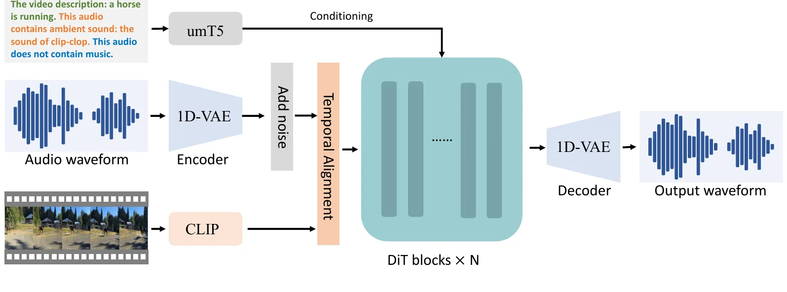
按 5.7.1 的数推算（论文没直接给）：12 秒 48 帧，即视频特征 4 FPS；隐序列 256，每个音频 token 对应 12 / 256 = 46.9 ms，即 44,100 × 12 / 256 ≈ 2,067 个采样点。视频特征要复制 256 / 48 ≈ 5.33 次才能对齐，不是整数倍，论文没说怎么处理，未核实。
5.7.2 评测。只有定性比较：和开源的 MMAudio 比（图 33，未放图，看原图 ↗，视频是 Wan 生成的 5 秒片段），作者说长时间一致性更好（倒咖啡）、更干净（打字）、节奏感更好（走路、拳击、马蹄）。局限：不会生成笑声、哭声、说话，因为训练数据刻意去掉了人声；MMAudio 能出类似说话的声音是因为它保留了这类数据。
局限。大运动场景里保细节仍难；14B 在一张高端 GPU 上不优化要约 30 分钟；缺少教育、医疗等领域的专门能力，希望靠开源和社区补。
结论。报告公开了 Wan-VAE 和 DiT 的设计、训练、数据、评测和结果，探索了 I2V、编辑、个性化等下游应用；除了 14B，1.3B 也有竞争力并能在消费级显卡上跑。之后会继续扩大数据和模型。
按名字字母顺序列出 61 人，没有标注分工或通讯作者。
仓库只有推理代码。下表把报告里能和代码对上的设定列出来；训练相关的不在其中。
| 项目 | 报告 | 代码 / HF 配置 |
|---|---|---|
| 1.3B 结构 | 30 层（4.7.2） | wan_t2v_1_3B.py：dim 1536，FFN 8960，12 头，30 层 |
| 14B 结构 | 未给 | wan_t2v_14B.py：dim 5120，FFN 13824，40 头，40 层 |
| 文本 | umT5，512 token | umt5_xxl，text_len = 512，文本维 4096 |
| VAE | 4 × 8 × 8，16 通道，127M | vae_stride = (4, 8, 8)，z_dim = 16，126,892,531 个参数 |
| patch | (1, 2, 2) 3D 卷积 | patch_size = (1, 2, 2)，nn.Conv3d |
| 采样步数 | “通常约 50 步” | generate.py：T2V 50 步，I2V 40 步 |
| 时间偏移 shift | 未给 | 默认 5.0；480p 的 I2V 用 3.0；首尾帧和 VACE 用 16 |
| CFG | 提到用 CFG | sample_guide_scale = 5.0；负提示是一段中文（“色调艳丽，过曝，静态……”） |
| 采样器 | 未给 | UniPC（默认）或 DPM++，都是流匹配版 |
| 帧率 | 训练视频 16 fps（4.2.2） | sample_fps = 16，81 帧约 5 秒 |
| I2V | 通道拼接 + CLIP 解耦交叉注意力 | in_dim 36；CLIP 是 open-clip-xlm-roberta-large-vit-huge-14，257 个 token，经 MLPProj 投影 |
text2video.py 的 generate 签名默认 sampling_steps=50，但它的文档字符串写“defaults to 40”，两处不一致（实际以签名和 generate.py 为准，T2V 50 步）。时间偏移把均匀的 \(\sigma\) 网格变成 \(\sigma'=s\sigma/(1+(s-1)\sigma)\)：\(s=5\)、50 步时，第 25 步的 \(\sigma'\) 已经是 0.833，即一半的步数花在噪声比例 0.83 以上的阶段；最后一步 \(\sigma'=0.093\)。这样把计算集中在高噪声段（定布局）。第 8 幕可以切换 \(s\) 看网格怎样变。
Wan2.2 在 2025 年 7 月 28 日开源，没有单独的论文或技术报告。下面依据 README（“Introduction of Wan2.2”一节）和代码整理；README 的图来自仓库 assets/，仓库是 Apache-2.0 许可，只做了缩放和格式转换。README 说相比 Wan2.1，训练数据多了 65.6% 的图像和 83.2% 的视频，但没有给其他训练细节。
| 模型 | 结构 | VAE | 说明 |
|---|---|---|---|
| T2V-A14B | 两个 14B 专家（MoE），每步只用一个 | Wan2.1-VAE（4 × 8 × 8，16 通道） | 480p / 720p |
| I2V-A14B | 同上，in_dim 36，没有 CLIP 分支 | Wan2.1-VAE | 480p / 720p |
| TI2V-5B | 单个 5B 稠密模型 | Wan2.2-VAE（4 × 16 × 16，48 通道） | 一个模型同时做 T2V 和 I2V；720p、24 fps |
| S2V-14B、Animate-14B | 语音驱动、角色动画 | — | 本页不涉及 |
注意：只有 TI2V-5B 用 Wan2.2-VAE，两个 A14B 仍用 Wan2.1-VAE（wan_t2v_A14B.py、wan_i2v_A14B.py 的 vae_checkpoint = 'Wan2.1_VAE.pth'）。
A14B 用两个专家：高噪声专家负责去噪前期（定整体布局），低噪声专家负责后期（补细节）。每个专家约 14B，总参数约 27B，但每一步只激活一个，所以计算量和显存与 14B 基本相同。和语言模型里按 token 路由的 MoE 不同，这里的“路由”只看时间步，不是学出来的。
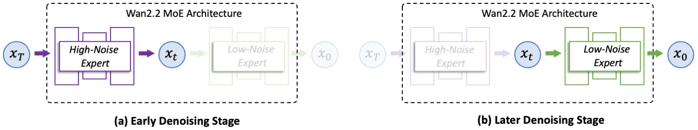
assets/moe_arch.png · Wan-Video/Wan2.2（Apache-2.0）· 只做了格式转换 · 看原图 ↗(a) 前期：高噪声专家把 \(x_T\) 去噪到 \(x_t\)，低噪声专家闲置；(b) 后期：低噪声专家从 \(x_t\) 去噪到 \(x_0\)。README 用信噪比（SNR）定义切换点：去噪开始时 \(t\) 大、SNR 最小，记为 \(\mathrm{SNR}_{\min}\)；取 SNR 为 \(\mathrm{SNR}_{\min}/2\)（图上纵轴是 log SNR）对应的步 \(t_{\rm moe}\)，\(t\ge t_{\rm moe}\) 用高噪声专家，\(t<t_{\rm moe}\) 换低噪声专家。右图的验证损失：两个专家都用 Wan2.2 的版本最低；只把低噪声专家换成 Wan2.2 也明显好于只换高噪声专家。
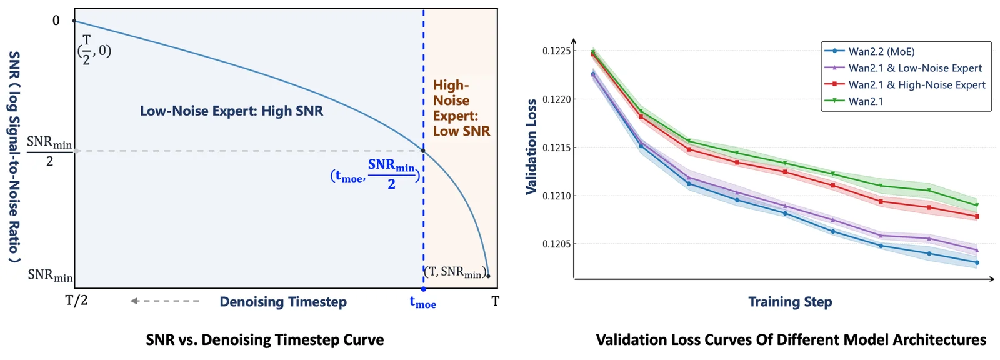
assets/moe_2.png · Wan-Video/Wan2.2（Apache-2.0）· 只做了缩放和格式转换 · 看原图 ↗左：横轴是去噪步（从 \(T\) 往 \(T/2\) 走），纵轴 log SNR；\(t_{\rm moe}\) 右侧是高噪声专家，左侧是低噪声专家。右：Wan2.1、Wan2.1 加高噪声专家、Wan2.1 加低噪声专家、Wan2.2（MoE）的验证损失，最后一个最低（约 0.1203）。代码里的切换。wan/text2video.py 的 _prepare_model_for_timestep：t >= boundary × 1000 用 high_noise_model，否则 low_noise_model；不用的那个可以卸到 CPU。两个专家的 CFG 系数也不同。
| 配置 | boundary | shift | 步数 | CFG（低噪 / 高噪） | 高噪声专家步数（我算的） |
|---|---|---|---|---|---|
| T2V-A14B | 0.875 | 12.0 | 40 | 3.0 / 4.0 | 26 / 40 |
| I2V-A14B | 0.900 | 5.0 | 40 | 3.5 / 3.5 | 15 / 40 |
步数。按 UniPC 的 set_timesteps：\(\sigma\) 从 0.999 均匀降到 0（取前 40 个），再做时间偏移。T2V（shift 12）有 26 步的 \(\sigma'\ge0.875\)，即 65% 的步用高噪声专家；I2V（shift 5）有 15 步 \(\ge0.9\)。
SNR 定义。线性流匹配里 \(x=(1-\sigma)x_0+\sigma\epsilon\)，SNR \(=((1-\sigma)/\sigma)^2\)。\(\sigma_{\max}=0.999\) 时 log SNR \(=-13.8\)，一半是 \(-6.9\)，对应 \(\sigma\approx0.969\)，而不是配置里的 0.875 或 0.9。所以 README 的“SNR_min 的一半”要么用了别的 SNR 或时间定义（例如训练时的偏移），要么只是示意；用公开代码复算不出来，未核实。
27B。HF 上 T2V-A14B 高噪声专家的 index.json 写 total_size 57,153,966,336 字节，除以 4 是 14,288,491,584，和 Wan2.1-T2V-14B 的参数数完全相同（结构相同）。两个专家合计 28.58B，README 写“总参数 27B”，差 1.6B，原因不明。
为了更高效地部署，Wan2.2 做了高压缩 VAE：时间 4 倍、空间 16 × 16 倍，48 个通道。README 把“信息压缩率”定义为像素数 × 3 ÷ 隐变量数：Wan2.1-VAE 是 \(3\times4\times8\times8/16=48\)，Wan2.2-VAE 是 \(3\times4\times16\times16/48=64\)。DiT 的 patch 化再做 1 × 2 × 2，所以 TI2V-5B 的总压缩是 4 × 32 × 32：一个 token 对应 4 帧里 32 × 32 的像素块。
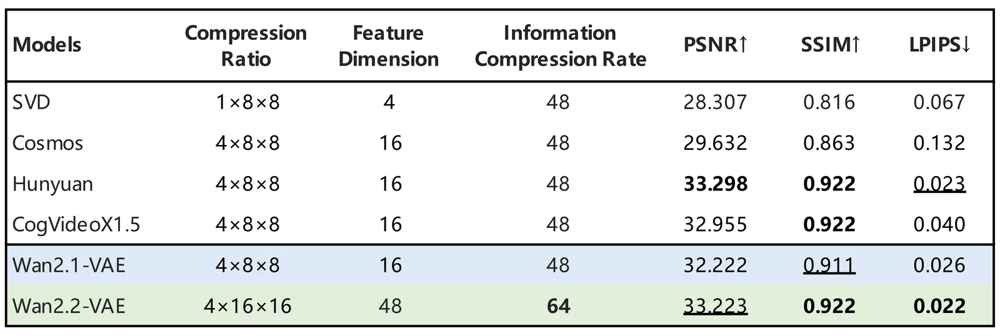
assets/vae.png · Wan-Video/Wan2.2（Apache-2.0）· 只做了缩放和格式转换 · 看原图 ↗Wan2.2-VAE：4 × 16 × 16，48 维，信息压缩率 64，PSNR 33.223，SSIM 0.922，LPIPS 0.022。Wan2.1-VAE：4 × 8 × 8，16 维，48，PSNR 32.222，SSIM 0.911，LPIPS 0.026。Hunyuan 的 PSNR 33.298 最高。README 没说测试集。wan/modules/vae2_2.py：编码前先把像素做 2 × 2 的 patchify（"b c (h q) (w r) -> b (c r q) h w"，3 通道变 12 通道），再经过三级下采样（8 倍），合起来空间 16 倍；解码末尾 unpatchify 还原。下采样和上采样块带一条不含参数的捷径（AvgDown3D 按块平均、DupUp3D 复制），时间方向仍是“首帧单独、之后每 4 帧一个隐帧”的因果分块。z_dim=48，编码器基础通道 160，解码器 256。HF 上 TI2V-5B Diffusers 版 VAE 的文件头合计 704,688,668 个参数，是 Wan2.1-VAE（126.9M）的 5.6 倍，README 没提，主要来自更宽的解码器（我的推断）。
HF 的 config.json：dim 3072，30 层，24 个头（每头 128 维），ffn_dim 14336，in_dim = out_dim = 48，text_len 512，model_type "ti2v"。仓库配置 wan_ti2v_5B.py：vae_stride (4, 16, 16)，patch_size (1, 2, 2)，24 fps，121 帧（约 5 秒），50 步，shift 5.0，CFG 5.0。参数 4,999,787,712（读者注 6）。720p 实际是 1280 × 704：总压缩 32 倍，720 不是 32 的倍数（720 / 32 = 22.5），704 = 22 × 32。
一段 121 帧、1280 × 704 的视频：VAE 后 31 × 44 × 80 × 48，patch 后 31 × 22 × 40 = 27,280 个 token。同样 5 秒 720p，Wan2.1-14B（81 帧，1280 × 720）是 75,600 个 token。每个 token 对应的像素：前者 121 × 704 × 1280 / 27,280 ≈ 3,997（≈ 4 × 32 × 32 = 4,096），后者 81 × 720 × 1280 / 75,600 ≈ 987（≈ 4 × 16 × 16 = 1,024）。
怎样一个模型同时做 T2V 和 I2V。TI2V-5B 没有 Wan2.1-I2V 那样的额外输入通道，也没有 CLIP 分支，输入输出都是 48 通道。做法是：
wan/textimage2video.py 的 i2v：z = self.vae.encode([img])（单帧，得到 1 个隐帧）；mask1, mask2 = masks_like([noise], zero=True) 把 mask2 的第 0 个隐帧置 0、其余为 1；初始化 latent = (1 - mask2) * z + mask2 * noise；每步算 temp_ts = (mask2[0][0][:, ::2, ::2] * timestep).flatten()，即按 patch 网格取掩码乘当前 \(t\)，首帧 token 的 \(t=0\)，再把补齐部分填 \(t\)；每步之后再执行一次 latent = (1 - mask2) * z + mask2 * latent。t2v 路径里 masks_like(noise, zero=False) 全为 1，所有 token 同一个 \(t\)、全部从噪声开始。model.py 里 e 的形状注释是 [B, L1, 6, C]。和任务描述一致。
训练时首帧“不计损失”：仓库没有训练代码，无法核对，未核实。一个线索：wan/utils/utils.py 的 masks_like 还有一个推理代码从不调用的分支（传入 generator 时）：以概率 p=0.2 把第 0 个隐帧的 mask2 置 0，同时 mask1 取 \(e^{\mathcal N(-3.5,\,0.5)}\approx0.03\)。我推测这是训练时的写法：约 20% 的样本按图生视频训练（首帧干净、\(t=0\)），mask1 可能是首帧的小噪声或损失权重，但用途不明，标“我的推断”。
OpenWAM §4.1.2 拿来和 Wan2.2-VAE 对比的另一个重建式编码器。它来自 Black Forest Labs 的图像模型 FLUX.2，没有时间轴。依据是 BFL 2025 年 11 月 25 日的技术博客 “FLUX.2: Analyzing and Enhancing the Latent Space of FLUX – Representation Comparison”（博客的图不放，只链接）和 HF / ModelScope 上的配置。
博客要点。
配置核对。FLUX.2-dev 在 HF 上需要登录同意许可（非商业许可），配置从 ModelScope 的同名仓库读到；和 HF 上不需登录、Apache-2.0 的 FLUX.2-klein-4B 的 vae/config.json 逐项相同（后者 _name_or_path 就是 FLUX.2-dev）：AutoencoderKLFlux2，latent_channels 32，block_out_channels [128, 256, 512, 512]（4 级，3 次下采样，空间 8 倍），patch_size [2, 2]，带 BatchNorm（batch_norm_eps 1e-4）。klein-4B 的 VAE 文件头合计 84,046,372 个数（含 BatchNorm 统计量）。所以“32 通道、8 倍下采样，再 2 × 2 打包成 128 通道、等效 16 倍”是配置本身的设定，和 OpenWAM 页读者注 22 一致。
在 OpenWAM 里。FLUX.2-VAE 是图像 VAE，逐帧编码；时间上首帧单独、其余每 4 帧平均（OpenWAM 读者注 21），得到和 Wan2.2-VAE 一样的 3 × 24 × 20 网格，但每个位置 128 通道，DiT token 输入 512 维，是 Wan2.2-VAE（192 维）的 2.7 倍。图 7 里它 84.26，低于 Wan2.2-VAE 的 90.30。
OpenWAM 的世界流就是 Wan2.2-TI2V-5B 的 DiT（30 层，宽 3072），视觉编码器是冻结的 Wan2.2-VAE，文本编码器是冻结的 umT5。它和一个 1B 的 ActionDiT 逐层做联合自注意力，详见 OpenWAM §4.1.1 和 读者问答 问 2。和本页对应的几点：
名字拆开。Wan2.2 是版本；TI2V = Text-Image-to-Video，表示文本和（可选的）图像共同生成视频；5B 是 50 亿参数（精确 4,999,787,712），而且是一个稠密模型，每一步全部参数都参与计算。
和 A14B 对比。
| T2V-A14B | I2V-A14B | TI2V-5B | |
|---|---|---|---|
| 任务 | 只文生视频 | 只图生视频 | 两者都做 |
| 结构 | 2 个 14.29B 专家，按时间步切换 | 同左 | 1 个 5.00B 稠密 DiT |
| 每步激活参数 | 14.29B | 14.29B | 5.00B |
| DiT 宽度 × 层数 | 5120 × 40 | 5120 × 40 | 3072 × 30 |
| VAE | Wan2.1-VAE，4 × 8 × 8，16 通道 | 同左 | Wan2.2-VAE，4 × 16 × 16，48 通道 |
| 输入通道 | 16 | 36（噪声 16 + 条件 16 + 掩码 4） | 48（首帧直接替换，不加通道） |
| 图像条件方式 | — | 通道拼接 | 替换首个隐帧，该帧 \(t=0\) |
| 5 秒 720p 的 token 数 | 75,600（81 帧） | 75,600 | 27,280（121 帧，1280 × 704） |
| 帧率 / 步数 | 16 fps / 40 步 | 16 fps / 40 步 | 24 fps / 50 步 |
一个模型怎样同时做两件事。关键是“每个 token 一个时间步”。有起始图时，图经 VAE 得到的隐帧直接当第 1 个隐帧，时间步标 0，告诉网络“这一帧已经是干净的，照着它往后生成”；每一步去噪后再把它覆盖回去。没有起始图时，所有隐帧都是噪声、时间步相同，就是普通的文生视频。两种情况用的是同一套权重、同一个输入格式，不需要额外通道或图像编码器。代码核对见读者注 21，3D 动画第 10 幕可以切换两种模式。
为什么 OpenWAM 选它。OpenWAM §4.1.1 在 RoboTwin2.0-Full 上比较了四个骨干：Wan2.1-VACE-1.3B 90.14、Cosmos-Predict2.5-2B 91.64、Wan2.2-TI2V-5B 92.39、Wan2.1-I2V-14B 93.79。14B 最好，5B 只低 93.79 − 92.39 = 1.40 点，参数是它的 5.00 / 16.39 = 31%（按 I2V-14B 的精确参数）。另外几个原因是我从结构推出来的：TI2V 的“首帧干净、后续去噪”正好对应机器人里“当前观测已知、预测未来”；Wan2.2-VAE 的 4 × 32 × 32 总压缩让 token 少，30 层 × 3072 也比 40 层 × 5120 便宜得多，和动作流逐层联合注意力时开销可控。
以下各条都是本页加的核算或对照，不属于论文内容。按编号排列，点编号跳到对应位置。
和 OpenWAM 页的对照：OpenWAM 读者注 21、22 和问 2 里关于 Wan2.2-VAE（16 倍、48 通道、首帧单独加每 4 帧）、TI2V-5B（30 层、3072、每层约 1.64 亿参数）和 FLUX.2-VAE（32 通道 × 2 × 2 = 128）的说法，本页都核对过，没有发现矛盾。
论文没写、我也没找到的：训练时间步分布的参数、训练总步数和数据量的具体数字、Wan-Bench 的维度权重、Wan2.2 的训练细节（包括 TI2V 的首帧损失处理和两个专家怎样初始化、各训多少步）。
文中提到的数据集、基准、代码和权重。链接在 2026 年 11 月 16 日用脚本检查过，除注明的以外都返回 200。
| 名称 | 是什么 | 主页 | 论文 |
|---|---|---|---|
| Wan2.1 | 本文，代码和权重 | HF Wan-AI | 2503.20314 |
| Wan2.2 | 后续版本：MoE、Wan2.2-VAE、TI2V-5B | TI2V-5B 权重 | 无单独论文 |
| VBench | 视频生成评测基准，表 4 | vchitect.github.io/VBench-project | 2311.17982 |
| LAION-5B | 图文数据集，其美学分类器用于初筛 | laion.ai/blog/laion-5b | 2210.08402 |
| Video-MME | 视频理解基准，评描述模型 | video-mme.github.io | 2405.21075 |
| ImageNet | FLUX.2 博客的实验数据 | image-net.org（脚本访问超时，未确认 200） | Deng 等，CVPR 2009 |
| RoboTwin 2.0 | OpenWAM 比较骨干和编码器的基准 | robotwin-platform.github.io | 2506.18088 |
| VACE | 5.2 节的统一编辑框架 | github.com/ali-vilab/VACE | 2503.07598 |
| umT5 | 文本编码器 | huggingface.co/google/umt5-xxl | 2304.09151 |
| FLUX.2 隐空间博客 | FLUX.2-VAE 的设计分析 | bfl.ai/research | 技术博客，2025-11-25 |
| FLUX.2-klein-4B | 不需登录的 FLUX.2 权重，VAE 配置和 dev 相同 | huggingface.co/black-forest-labs | — |
| FLUX.2-dev（ModelScope） | 读 VAE 配置用；HF 版需登录（401） | modelscope.cn | — |
| MMAudio | 5.7 节的对比方法 | github.com/hkchengrex/MMAudio | 2412.15322 |